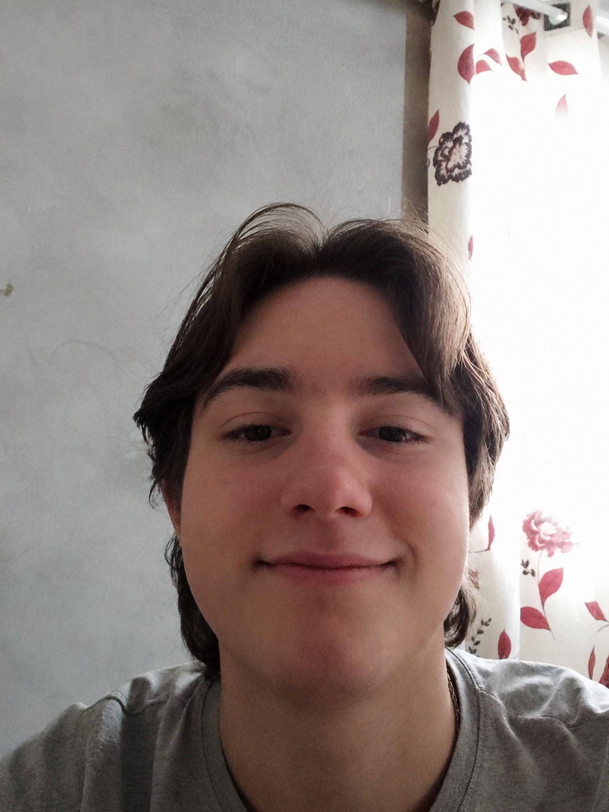

Quem sou?
Um jovem de 16 anos Cursando o ensino médio técnico no colégio Estadual Prof. Reni Correia Gamper desde 2025,
Atuando em Manoel Ribas - PR.
- endereco e tudo em baixo
Formação:
Habilidades:
- Interpretação básica na língua inglesa.
